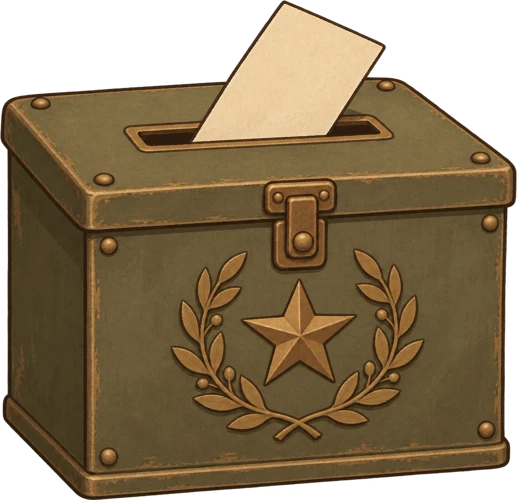

Politics
Government
Elections
Parties
Issues
Bills
Budgets
Metrics
Monday, January 20, 2025
Elections
Council member

Election day
June 2, 2026
3 seats to fill
Filing hasn’t opened yet.
Announce
Sim to Jan 29